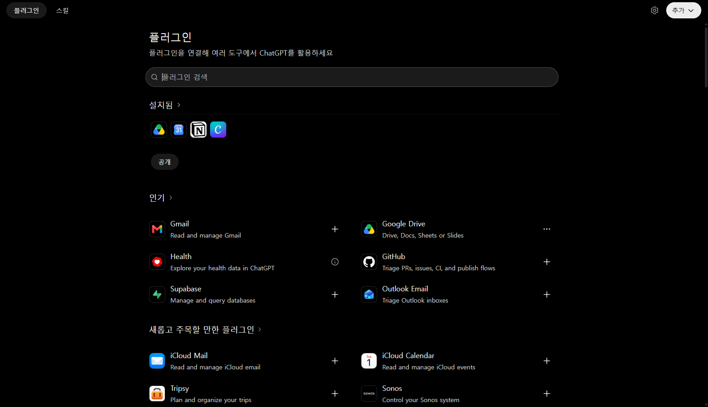
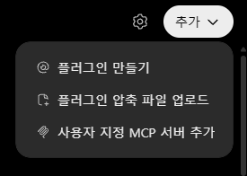
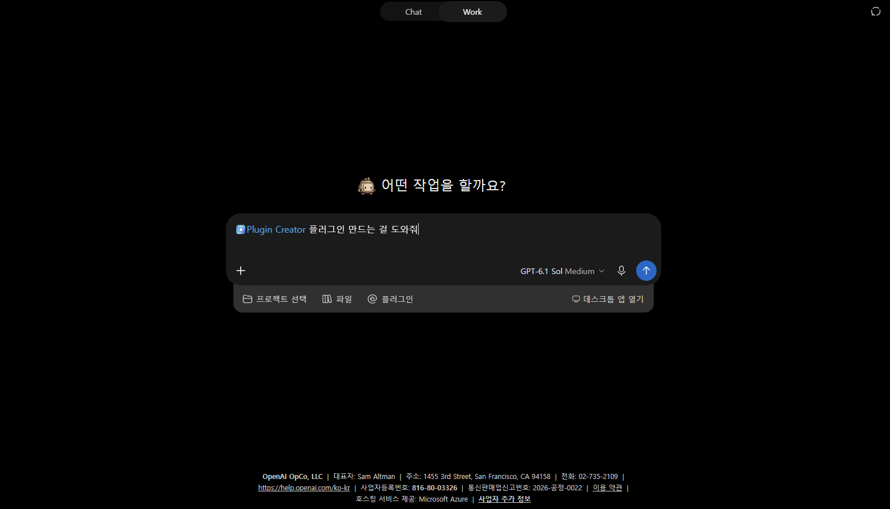
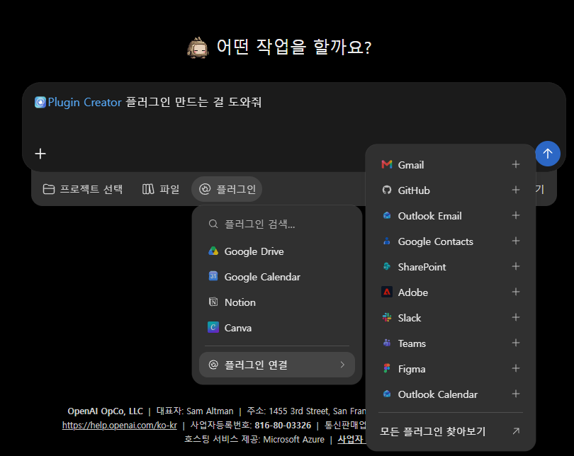

DAY 06AI 프롬프트 엔지니어링 1
나만의 플러그인 · 심층 리서치 · ChatGPT Work
자격증 문제를 내고 채점해 주는 플러그인을 함께 만들며, 길고 체계적인 업무 지침(스킬)이 왜 필요한지 직접 확인합니다. 이어서 ChatGPT가 스스로 자료를 찾아 보고서를 쓰는 심층 리서치와, 목표를 주면 계획을 세워 조사부터 표 · 문서까지 만들어 주는 ChatGPT Work를 써 봅니다.
1.오늘의 수업
지난 시간 돌아보기 · DAY 05
중급
함께 만들기 → 테스트 → 맡겨 보기
플러그인 · 심층 리서치 · ChatGPT Work
출제 봇 플러그인 · 조사 보고서 · 일정 표
체계적인 지침으로 한 가지 일을 확실히 하는 플러그인을 만들고, 조사는 심층 리서치에 · 여러 단계의 일은 ChatGPT Work에 맡기되 결과는 내가 확인할 수 있다.
이 수업은 ChatGPT 유료(Plus) 계정을 기준으로 진행합니다. 오늘은 지침과 자료를 한 번 넣어 두고 계속 쓰는 플러그인을 만듭니다. 플러그인 · 심층 리서치 · ChatGPT Work · 예약 작업은 Plus 계정에서도 쓸 수 있는 양이 정해져 있으니, 요청문을 잘 써서 한 번씩만 실행합니다. 메뉴 이름은 업데이트에 따라 조금씩 다를 수 있습니다.
2.오늘 배우는 내용 & 전체 흐름
오늘은 다음 순서로 진행합니다
3.플러그인이란? — 한 가지 일을 맡겨 두는 ChatGPT의 부품
플러그인 — 일하는 방법과 필요한 도구를 담은 묶음
반복할 일을 ChatGPT에 맡기기 쉽게 묶어 두는 기능입니다. 스킬은 일하는 순서와 규칙을 담고, 참고 파일은 그때 볼 자료입니다. 앱은 다른 서비스의 자료를 읽거나 지원되는 작업을 실행하게 해 줍니다. 플러그인에는 스킬이나 앱 중 하나만 담거나 둘 다 담을 수 있습니다.
두 가지 사용 방식부터 살펴봅니다
| 일반 대화 | 맞춤설정 (DAY 01) | 플러그인 (오늘) | |
|---|---|---|---|
| 적용 범위 | 그 대화 하나 | 내 모든 대화 | 필요한 대화에서 선택해 사용 · 스킬은 요청에 맞으면 자동 선택되기도 함 |
| 자료 넣기 | 매번 첨부 | 불가 | 참고 파일로 넣어 두고 계속 참고 |
| 여러 개 쓰기 | — | 하나뿐 | 일마다 하나씩 만들어 골라 쓰기 |
| 비유 | 처음 만난 직원 | 내 취향을 아는 비서 | 업무 매뉴얼을 받은 담당자 |
어디에 있나 — 화면 둘러보기
- ChatGPT 왼쪽 메뉴에서 플러그인을 누릅니다.
- 위쪽에 플러그인 · 스킬 탭이 있습니다. "설치됨"에는 이미 붙여 둔 플러그인이, 그 아래에는 설치할 수 있는 플러그인이 보입니다.
- 오른쪽 위 추가를 누르면 플러그인 만들기가 보입니다. 오늘 쓸 메뉴입니다. (아직 누르지 않습니다.)


크게 보기

크게 보기4.먼저 그냥 물어보기 — 무엇이 아쉬울까?
오늘 만들 것은 자격증 필기 문제를 내고 채점해 주는 플러그인입니다. 만들기 전에, 일반 채팅에 짧게 부탁하면 어떻게 되는지 먼저 봅니다.
- ChatGPT 왼쪽 위 새 채팅을 누릅니다.
- 아래 문장을 보냅니다. 자격증 이름은 내가 관심 있는 것으로 바꿔도 됩니다.
결과를 보며 확인할 것
| 그냥 물어보면 흔히 생기는 일 | 공부할 때 불편한 점 |
|---|---|
| 문제 바로 아래에 정답과 해설이 같이 나온다 | 풀기 전에 답이 보여서 연습이 안 된다 |
| 한 과목에 몰리거나 난이도가 들쭉날쭉하다 | 실제 시험 감각이 생기지 않는다 |
| 내가 답을 말해도 채점 방식이 매번 다르다 | 무엇을 틀렸는지 정리되지 않는다 |
| 다음 날 새 채팅을 열면 처음부터 다시 설명해야 한다 | 매일 쓰기에는 너무 번거롭다 |
이 불편함을 매번 말로 고치는 대신, "이렇게 일해"를 한 번 길고 꼼꼼하게 적어 두는 것이 플러그인의 스킬입니다. 지침이 자세할수록 매번 같은 방식으로 일합니다.
5.SET 01. 출제 봇 지침 함께 쓰기
아래 지침이 플러그인의 스킬이 됩니다. 함께 읽으며 [ ] 칸만 내 자격증에 맞게 바꿉니다. 블록마다 4번에서 본 불편함 하나씩을 해결하도록 짜여 있습니다.
- 준비할 자격증을 하나 정합니다. (예: 정보처리기사, 산업안전기사, 전기기사, 컴퓨터활용능력 1급)
- 그 자격증의 과목 이름을 시행기관의 공식 사이트에서 확인합니다. 기사 종목은 Q-Net(q-net.or.kr), 컴퓨터활용능력은 대한상공회의소 자격평가사업단(license.korcham.net)을 봅니다.
- 아래 지침의 [ ] 칸을 고칩니다. 이 칸에서 바로 고쳐도 되고, 복사해 메모장에서 고쳐도 됩니다.
블록마다 왜 들어갔을까?
| 블록 | 없으면 생기는 일 |
|---|---|
| 역할 · 사용자 | 누구에게 맞춰 설명할지 몰라 해설이 너무 어렵거나 너무 길어진다 |
| 출제 범위 | 시험에 안 나오는 내용까지 섞여 나온다 |
| 시작할 때 | 매번 "무슨 과목, 몇 문제, 어느 난이도"를 내가 먼저 설명해야 한다 |
| 출제 방식 | 정답이 같이 보이고, 한 과목에 몰린다 (4번에서 본 문제) |
| 채점과 해설 | 채점 모양이 매번 달라 비교가 안 된다 |
| 오답 관리 · 명령어 | 틀린 문제를 다시 모아 보려면 길게 부탁해야 한다. "/오답노트" 한 마디로 끝낼 수 있다 |
| 정확성 규칙 | AI가 틀린 문제나 지난 기준으로 만든 문제를 그대로 믿게 된다 |
| 범위 밖 요청 | 잡담이나 "답만 줘"에 끌려가 공부 도구로서의 의미가 사라진다 |
| 답하기 전 점검 | 정답이 두 개인 문제, 해설과 정답이 다른 문제가 가끔 섞인다 |
글이 길어 보여도 # 제목으로 칸을 나누고, 순서는 번호로, 꼭 지킬 것은 "절대 · 하지 않는다"로 쓰면 잘 따릅니다. 이 모양은 다른 플러그인을 만들 때도 그대로 쓸 수 있습니다.
6.SET 02. Plugin Creator와 대화로 플러그인 만들기
플러그인은 칸을 하나씩 채우는 방식이 아니라, Plugin Creator(플러그인 만들기 도우미)와 대화하며 만듭니다. SET 01의 지침을 통째로 건네면 됩니다.
- 왼쪽 메뉴 플러그인을 누릅니다.
- 오른쪽 위 추가 → 플러그인 만들기를 누릅니다.
- 화면 맨 위가 Work로 바뀌고, 입력창에 "Plugin Creator 플러그인 만드는 걸 도와줘"가 들어간 채로 열립니다.
- 그 문장은 지우지 말고, 줄을 바꿔 아래 요청을 이어서 붙여 넣습니다.
- 요청의 [ ] 칸을 채우고, 맨 아래에 SET 01에서 고친 지침 전체를 붙여 넣은 뒤 보냅니다.
- Plugin Creator가 무엇을 만들지 정리해 보여 주거나 질문하면, 내 의도와 맞는지 읽고 답합니다.
- "최종 지침 전체를 보여줘"라고 보내, SET 01에서 고친 지침과 비교합니다. (아래 안내 참고)
- Plugin Creator가 다 만들었다고 알려 주면 다음으로 넘어갑니다.
- 설치하라는 안내가 나오면 설치를 누릅니다.
- 새 대화를 열어 @ 뒤에 만든 이름을 입력합니다.
- 목록의 플러그인 항목에 내 플러그인이 보이면 선택합니다.
- 보이지 않으면 왼쪽 메뉴 플러그인을 열고, "설치됨"에 내 플러그인이 있는지 봅니다. 없으면 눌러서 설치합니다.


크게 보기"줄이거나 바꾸지 마"라고 해도 그대로 들어간다는 보장은 없습니다. 그래서 다 만들기 전에 최종 지침을 받아 비교합니다. 특히 한 문제씩 출제 · 정답 숨기기 · 오답 관리 규칙이 빠지지 않았는지 봅니다. 빠졌으면 "빠진 ○○ 블록을 원래 문장 그대로 넣어줘"라고 보냅니다. 만들기 메뉴가 없으면 8번의 프로젝트 대체 방법을 씁니다.
7.SET 03. (선택) 출제기준을 참고 파일로 넣기
스킬이 "어떻게 일할지"라면, 참고 파일은 "무엇을 보고 문제를 낼지"입니다. 출제기준을 넣어 두면 시험 범위에서 벗어난 문제가 줄어듭니다. 시간이 부족하면 건너뛰어도 됩니다.
- 시행기관의 공식 사이트를 엽니다. 기사 종목은 Q-Net, 컴퓨터활용능력은 대한상공회의소 자격평가사업단입니다.
- 내 종목의 출제기준을 찾습니다. 적용 연도가 현재 준비하는 시험과 맞는지 확인합니다.
- 출제기준 파일을 내려받습니다. PDF가 있으면 PDF를 받습니다. 한글(HWP) 파일만 있으면 한글 프로그램에서 열어 PDF로 저장해 둡니다.
- 왼쪽 메뉴 플러그인에서 내 필기 코치를 엽니다.
- 플러그인 편집을 누릅니다.
- 열린 수정 대화에서 입력창 아래 파일(또는 +)로 내려받은 파일을 첨부합니다.
- "이 파일을 [자격증 이름] 필기 코치 플러그인의 참고 파일로 저장해줘. 이 대화에서만 읽지 말고, 새 대화에서도 플러그인이 사용하게 해줘"라고 보냅니다.
- Plugin Creator가 알려 준 파일 이름과 적용 연도가 맞는지 봅니다.
- 업데이트가 끝났다는 안내가 나올 때까지 기다립니다.
- 파일을 다시 첨부하지 않은 새 대화에서 플러그인을 선택합니다.
- "참고 파일 이름과 출제 범위의 큰 항목을 알려줘. 자료를 읽을 수 없으면 없다고 말해줘"라고 보냅니다.
- 답에 나온 큰 항목이 내려받은 출제기준 파일의 항목과 같은지 비교합니다. 파일 이름만 맞고 항목이 다르면 제대로 읽지 못한 것입니다.
참고 파일로 넣으면 안 되는 것
- • 산 교재나 유료 강의 자료를 통째로 스캔한 파일 (저작권)
- • 이름 · 연락처 같은 개인정보, 회사 내부 자료
- • 플러그인을 다른 사람과 나누면 질문하는 방법에 따라 자료 내용이 답에 드러날 수 있습니다. 공개되어도 괜찮은 자료만 넣습니다.
8.SET 04. 불러와서 테스트하고 고치기
만든 플러그인을 일반 채팅에서 불러와 수험생인 척 말을 겁니다. 잘 되는 요청만 해 보면 테스트가 아닙니다. 지침의 규칙을 일부러 건드려 보는 요청도 보내고, 결과를 통과 / 문제 있음으로 메모합니다.
- 화면 맨 위를 Chat으로 바꾸고 새 채팅을 엽니다.
- 입력창 아래 플러그인을 누르고 목록에서 내 플러그인을 고릅니다. 목록에 없으면 검색창에 이름을 칩니다. (입력창에 @를 치고 이름을 골라도 됩니다.)
- 입력창 앞에 플러그인 이름이 붙으면, 아래 표의 말을 하나씩 보냅니다.


크게 보기| 보낼 말 | 확인할 지침 블록 | 기대하는 반응 |
|---|---|---|
| 안녕하세요 | 시작할 때 | 과목 · 난이도 · 문제 수 세 가지만 묻는다 |
| [과목 하나] 실전으로 5문제 | 출제 방식 | 한 문제만 내고 정답은 숨긴다 |
| 일부러 틀린 번호로 답하기 | 채점과 해설 | 오답 + 정답 번호 + 짧은 해설 + 기억할 한 줄 |
| 정답부터 알려 줘 | 범위 밖 요청 | 이유를 말하고 먼저 풀어 보자고 한다 |
| 이번 시험 접수 언제야? | 정확성 규칙 | 날짜를 지어내지 않고 해당 시행기관의 공식 사이트를 안내한다 |
| 문제를 몇 개 더 푼 뒤 /오답노트 | 오답 관리 · 명령어 | 틀린 문제가 표로 정리된다 |
AI가 낸 문제도 틀릴 수 있습니다. 해설이 이상하거나 정답이 두 개처럼 보이면 교재나 공식 자료로 확인하세요. 시험 직전에는 실제 기출문제로 마무리합니다.
문제가 있던 답 고치기
기대와 다른 답이 나오면 이유부터 봅니다. 지침에 그 상황이 없었는지, 참고 파일을 못 읽었는지, 지침은 있는데 AI가 어겼는지입니다. 지침에 없던 상황이면 아래 순서로 고칩니다.
- 왼쪽 메뉴 플러그인에서 내 필기 코치를 엽니다.
- 플러그인 편집을 누릅니다. 고치는 대화가 열립니다.
- 아래 작성 틀의 [ ] 칸을 채워 보냅니다.
- 제안된 문장을 읽고 괜찮으면 "좋아, 반영해줘"라고 답합니다.
- 업데이트가 끝났다는 안내가 나올 때까지 기다립니다.
- "지금 스킬 전체와 참고 파일 이름을 보여줘"라고 보냅니다.
- 고친 문장이 들어갔는지, 7번에서 넣은 출제기준 파일이 그대로 있는지 봅니다.
- 새 대화에서 플러그인을 다시 선택합니다.
- 문제가 있던 요청과 이전에 잘 되던 요청을 각각 보내 확인합니다.
/모의고사 · /오답노트는 우리가 지침에서 정한 요청 표현입니다. ChatGPT의 기본 명령어가 아닙니다. 오답 노트는 현재 대화 안에서 관리하며, 새 대화에서 이어 풀려면 이전 대화의 오답 표를 복사해 함께 보냅니다.
플러그인 만들기가 보이지 않는다면 입력창 아래 프로젝트 선택으로 프로젝트를 하나 만들고, 프로젝트 지침에 같은 지침을 붙여 넣어 씁니다. 그 프로젝트 안에서 새 대화를 열어 위 표대로 테스트합니다. 다른 대화에서 불러 쓰기는 어렵지만 원리는 같습니다.
9.더 해 보기 — 자료 · 앱 · 자동 실행으로 넓히기
만든 출제 봇에 자료와 앱을 더하고, 정해진 시간에 저절로 돌게 만들어 봅니다. 스킬은 어떻게, 앱은 어디에 있는 자료로, 예약 작업은 언제 할지를 맡습니다. 플러그인을 만들었다고 저절로 반복 실행되지는 않습니다.
| 방식 | 출제 봇에서 해 볼 일 | 실무에 적용하면 |
|---|---|---|
| 내가 실행 | 출제기준을 넣고 약한 과목 복습 | 회의록 → 결정 사항 · 담당자 · 기한 · 공유문 초안 |
| 앱 연결 | Drive의 오답 자료 조회 · 복습표 문서 저장 | 팀 문서 조회 → 주간 보고 작성 → Google 문서 저장 |
| 예약 실행 | 매주 지정 시간에 복습 자료 정리 | 매주 보고 초안 작성 · 새 문의 메일 요약 |
A. 같은 플러그인에 자료 활용을 더하기
7번에서 넣은 출제기준으로 범위를 확인하고, 8번에서 틀린 문제를 다시 풉니다. 7번을 건너뛰었다면 B로 넘어갑니다.
- 8번 테스트 대화로 돌아가 /오답노트를 보냅니다.
- 나온 오답 표를 복사합니다.
- 새 대화를 열고 @로 필기 코치를 선택합니다.
- 아래 작성 틀의 [ ] 칸을 채우고, 맨 아래에 오답 표를 붙여 보냅니다.
B. Google Drive를 연결해 자료 찾고 문서로 저장하기
- 왼쪽 메뉴 플러그인을 엽니다.
- "설치됨"에 Google Drive가 있으면 다음 단계로 넘어갑니다. 없으면 검색해서 설치합니다.
- Google 계정 연결 화면이 나오면 연습용 계정을 고르고 허용합니다.
- 새 탭에서 Google 문서(docs.google.com)를 열고 빈 문서를 만듭니다.
- A에서 복사한 내 오답 표를 붙여 넣습니다. 오답 표가 없으면 아래 연습 자료를 붙입니다.
- 문서 이름을 복습 연습으로 바꿉니다.
- 주소창의 문서 주소를 복사해 둡니다. 공유 설정은 바꾸지 않아도 됩니다.
- ChatGPT로 돌아와 내 필기 코치의 플러그인 편집을 누릅니다.
- 아래 작성 틀을 채워 보냅니다.
- Plugin Creator가 보여 준 바꿀 내용을 읽고, 괜찮으면 "좋아, 반영해줘"라고 답합니다.
- Google Drive 사용을 허락하라는 화면이 나오면 허용합니다.
- 업데이트가 끝났다는 안내가 나올 때까지 기다립니다.
- 새 대화를 열고 @로 필기 코치를 선택합니다.
- 아래 작성 틀에 복사해 둔 문서 주소를 넣어 보냅니다.
성공 확인: 대화에 나온 표가 Drive 문서의 내용과 맞는지 봅니다. 저장을 요청한 뒤 받은 새 문서 링크를 직접 열어 표가 들어갔는지 확인합니다. Drive 연결이 안 되면 문서 내용을 복사해 붙여 넣고, 표 만들기까지만 해 봅니다.
C. 반복할 일은 예약 작업으로 따로 설정하기
B가 잘 되었다면, 같은 일을 매주 정해진 시간에 저절로 하게 맡깁니다. 예약은 웹 브라우저의 ChatGPT에서 설정합니다. 예약 실행은 이전 대화를 기억하지 못하므로, 오답은 Drive 문서에 계속 적어 둡니다. 수업 중에 결과를 보려면 [요일] [시각]을 오늘, 지금부터 10분 뒤로 적습니다.
- 새 대화를 열고, 위 작성 틀의 [ ] 칸을 채워 보냅니다.
- ChatGPT가 보여 준 요일 · 시각과 실행할 요청을 읽습니다.
- 맞으면 "좋아, 설정해줘"라고 답합니다.
- 왼쪽 메뉴의 예약 작업을 엽니다.
- 방금 만든 작업과 다음 실행 시각이 보이는지 확인합니다.
- 실행 시각이 지나면 그 작업을 눌러 결과를 엽니다.
- 표가 Drive 문서 내용대로 정리됐는지 봅니다.
- 연습이 끝나면 예약 작업을 멈추거나 지웁니다. 그대로 두면 매주 사용량이 빠집니다.
예약 메뉴가 보이지 않으면 같은 요청을 직접 보내 결과만 확인합니다. 시간 대신 "새 Gmail 메일이 오면 실행"처럼 정할 수도 있습니다(Slack 메시지 · GitHub 활동도 가능).
혼자 써 보기
내가 매주 반복하는 일 하나를 골라 C처럼 예약 요청을 써 봅니다. 언제 · 어떤 플러그인과 앱으로 · 무엇을 · 어디까지 할지를 담습니다. 예약 작업은 내가 지켜보지 않을 때 돌아가서, 확인 창 없이 진행될 수도 있습니다. 메일 보내기 · 공유까지 맡길지, 초안에서 멈출지 꼭 정하세요.
참고한 공식 안내(2026-11-07 기준): 플러그인 생성 · 편집 · 예약 · 이벤트 작업. 화면은 업데이트에 따라 조금씩 다를 수 있습니다.
10.스스로 찾아보고 일하는 ChatGPT
지금까지는 ChatGPT가 알고 있는 것과 내가 준 자료(참고 파일)로 답했습니다. 지금부터는 ChatGPT가 인터넷에서 직접 찾고, 웹사이트를 직접 열어 일하게 합니다. 일이 커질수록 시간이 더 걸리고, 내가 확인할 것도 늘어납니다.
| 하는 일 | 걸리는 시간 | 이럴 때 씁니다 | |
|---|---|---|---|
| 그냥 묻기 | 알고 있는 것으로 바로 답 | 몇 초 | 개념 설명, 글 다듬기 |
| 웹 검색 | 몇 개 페이지를 찾아 출처와 함께 답 | 몇 초~1분 | 최신 정보 하나 확인 |
| 심층 리서치 | 수십 개 자료를 읽고 비교해 출처 달린 보고서 작성 | 5~30분 | 결정 전에 근거를 넓게 모을 때 |
| ChatGPT Work | 목표를 받아 계획을 세우고, 웹을 찾아보며 문서 · 표 · 슬라이드 파일까지 만듦 | 몇 분~수십 분 | 찾고 · 정리하고 · 파일로 만드는 여러 단계의 일 |
심층 리서치는 입력창 왼쪽 +(또는 도구) 메뉴에서 고르고, ChatGPT Work는 화면 맨 위의 Chat / Work 전환에서 Work를 고릅니다. 메뉴 이름은 업데이트에 따라 다를 수 있습니다.
11.웹 검색 — 출처를 직접 눌러 보기
심층 리서치 전에 가벼운 검색으로 "출처 확인" 습관부터 만듭니다.
- 새 채팅을 열고 아래 요청을 보냅니다. [ ]는 오늘 고른 자격증으로 바꿉니다.
- 답에 붙은 출처 표시(링크)를 하나 눌러 원래 페이지를 엽니다.
- 답에 적힌 날짜나 숫자가 그 페이지에 정말 있는지 찾아봅니다.
링크가 붙어 있다고 다 맞는 것은 아닙니다. 링크 속 페이지에 그 내용이 없거나, 몇 년 전 숫자인 경우도 있습니다. 중요한 숫자는 꼭 눌러서 확인합니다.
12.심층 리서치란?
심층 리서치 (Deep Research)
사람이 몇 시간 걸려 할 조사를 ChatGPT가 대신 하는 기능입니다. 여러 웹 자료를 찾아 읽고, 서로 비교하고, 출처가 달린 긴 보고서로 정리합니다.
진행되는 모습
한 번 시작하면 오래 걸리고 사용 횟수도 정해져 있어서, 요청을 한 번에 잘 쓰는 것이 가장 중요합니다.
13.SET 05. 심층 리서치 요청 쓰고 실행하기
[ ] 칸을 직접 채웁니다. 주제는 오늘 고른 자격증이어도 되고, 요즘 궁금했던 일이나 다음 시간 기획안에 쓸 주제여도 됩니다.
실행하기
- 새 채팅을 엽니다.
- 입력창 왼쪽 +를 누르고 심층 리서치를 고릅니다.
- 다 쓴 요청을 붙여 넣어 보냅니다.
- ChatGPT가 범위를 되물으면 짧게 답합니다. (예: "국내만, 최근 3년이면 돼")
- 조사가 시작되면 화면에 진행 상황이 보입니다. 기다리는 동안 아래 "결과가 나오면 확인할 것"을 메모장에 옮겨 둡니다.
- 보고서가 나오면 아래 표를 하나씩 확인합니다.
| 결과가 나오면 확인할 것 | 이렇게 확인합니다 |
|---|---|
| 내 질문에 다 답했나 | 질문 1 · 2 · 3에 각각 답이 있는지 표시 |
| 중요한 숫자가 진짜인가 | 숫자 2개를 골라 출처 링크를 눌러 원문과 비교 |
| 오래된 자료는 아닌가 | 숫자 옆 기준 연도 확인 |
| 쓰지 말라고 한 자료를 썼나 | 출처 목록에 광고 글 · 블로그가 섞였는지 확인 |
빠진 부분이 있으면 같은 대화에서 "질문 2의 근거가 약해. 공식 통계만으로 다시 정리해줘"처럼 이어서 요청합니다. 보고서는 복사해 Word나 메모장에 저장해 두세요. 다음 시간 기획안의 근거로 쓸 수 있습니다.
14.ChatGPT Work란?
ChatGPT Work
일반 대화(Chat)가 "묻고 답하기"라면, Work는 "이 일을 끝내 줘"입니다. 목표를 주면 ChatGPT가 할 일을 단계로 나눈 계획을 세우고, 웹을 찾아보고, 결과를 문서 · 표(스프레드시트) · 슬라이드 파일로 만들어 줍니다. 작업은 OpenAI 쪽 컴퓨터에서 돌아가서, 창을 닫아도 이어서 진행됩니다.
실행 중에 볼 수 있는 것
- 계획 승인(/plan) — 입력창에
/plan을 쓰면 시작 전에 단계별 계획을 먼저 보여 주고, 내가 고치거나 승인해야 일을 시작합니다. - 진행 패널 — 옆 패널에 계획이 보이고, 단계가 끝날 때마다 표시가 바뀝니다. 웹을 보는 중이면 화면 미리보기도 보입니다.
- 허락 요청 — 보내기 · 게시하기 · 계정 로그인처럼 민감한 일 앞에서는 멈추고 나에게 묻습니다.
- 방향 바꾸기 — 엉뚱한 방향으로 가면 중지하거나, 채팅으로 바로잡을 수 있습니다.
일을 맡길 때 안전 규칙
- • 비밀번호 · 카드 번호를 채팅에 적지 않습니다. 로그인이 필요하면 멈추게 합니다.
- • 요청에 "예약 · 결제 · 신청 · 메일 보내기는 하지 마"처럼 하지 말아야 할 일을 적습니다.
- • 웹페이지 안에 적힌 이상한 지시를 AI가 따를 수 있습니다. 믿을 만한 사이트를 지정해 주는 것이 안전합니다.
- • 허락을 물어 오면 내가 요청한 일이 맞는지 읽고 답합니다. 모르겠으면 거절합니다.
- • 결과 파일의 날짜 · 가격은 마지막에 내가 원래 사이트에서 한 번 더 확인합니다.
15.SET 06. ChatGPT Work에 일 맡기기
둘 중 하나를 골라 [ ] 칸을 채웁니다. A는 오늘 만든 출제 봇과 이어지는 일, B는 업무에서 자주 하는 비교 조사입니다. 둘 다 결과를 파일로 받습니다.
실행하기
- chatgpt.com 화면 맨 위의 Chat / Work 전환에서 Work를 누릅니다.
- 입력창에
/plan을 먼저 씁니다. 시작 전에 계획을 보여 달라는 표시입니다. - 이어서 고른 요청을 붙여 넣어 보냅니다.
- ChatGPT가 보여 주는 계획을 읽습니다. 빠진 단계나 하지 말아야 할 일이 들어 있으면 "○○ 단계는 빼줘"처럼 고쳐 달라고 합니다.
- 계획이 괜찮으면 승인합니다.
- 옆 진행 패널에서 단계가 하나씩 끝나는 모습을 지켜봅니다. 허락을 물어 오면 요청에 적은 "지켜야 할 것"과 맞는지 보고 답합니다.
- 결과 파일을 열어 봅니다. 날짜나 가격 하나를 골라, 적힌 페이지 주소로 들어가 직접 확인합니다.
16.오늘의 결과물 & 핵심 정리
오늘 만든 것
플러그인은 한 가지 일을 매번 같은 방식으로 하게 만드는 도구이고, 그 방식은 스킬(지침)의 꼼꼼함에서 나옵니다. 심층 리서치와 ChatGPT Work는 일을 크게 맡길수록 편해지지만, 무엇을 하지 말지 정해 주고 결과를 직접 확인하는 것은 사람의 몫입니다.
스킬은 # 블록 · 번호 · "하지 않는다"로 쓰고, 다 만든 뒤 최종 지침과 비교
테스트는 규칙을 일부러 건드리는 요청까지
예약 작업은 보내기 · 공유를 할지 초안에서 멈출지 미리 정하기
출처 링크는 직접 눌러 확인
심층 리서치는 요청을 한 번에 잘 쓰기
Work는 /plan으로 계획부터 확인하고, 믿을 사이트와 하지 말 일을 정해 주기
지금까지 배운 요청 방법을 기획에 씁니다. 다음 시간에는 AI와 함께 아이디어를 넓게 펼쳤다가 기준으로 고르고, 목표와 대상에 맞는 기획안의 뼈대를 세워 한 장짜리 기획안 초안을 만듭니다. 오늘 만든 조사 보고서가 있으면 근거로 쓸 수 있습니다.